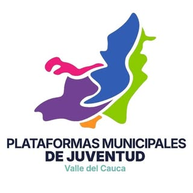
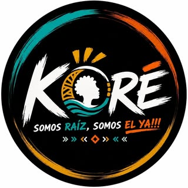

Camp Fest se aplaza y se reenfoca en la reconstrucción
El terremoto cambió las prioridades de nuestras comunidades, y también las nuestras. Pasamos el campamento al primer semestre de 2027 para que la Gobernación del Valle, Indervalle, Río Paila Castilla, Nestlé y los demás aliados atendieran primero la emergencia. Ninguno retiró su apoyo. Usamos ese tiempo para rediseñar el campamento: ahora gira alrededor de la reconstrucción social, el bienestar emocional y la preparación de las comunidades ante el riesgo.
Las inscripciones siguen abiertas
Si ya te inscribiste, no tienes que hacer nada
Mismo municipio, mismo equipo
Por qué un campamento después del terremoto
Después de una tragedia, la reconstrucción no termina cuando se levantan las paredes. También hay que reconstruir la confianza entre vecinos, la salud emocional de las personas y la capacidad de una comunidad para organizarse. Esa tarea la sostienen, en gran parte, los jóvenes.
Camp Fest reúne durante tres días a unos 150 jóvenes del Valle del Cauca para formarse en eso: cómo acompañar a su comunidad, cómo participar en la reconstrucción de su municipio y qué hacer si una emergencia se repite. No es una celebración ni un paseo. El encuentro y la convivencia son las herramientas, y la reconstrucción es el propósito.
Se organiza en Bugalagrande y lo coordinan dos consejeros municipales de juventud, elegidos según la Ley 1622 de 2013. Algunos jóvenes del Subsistema de Participación Juvenil del municipio ya participan en la organización y otros quieren sumarse; estamos esperando que confirmen su interés. Es la segunda edición: la primera se realizó en 2025.
Tejido social
Reconstruir la confianza entre vecinos y la capacidad de un barrio o una vereda para organizarse y salir adelante en conjunto.
Bienestar emocional
Reconocer el impacto de la tragedia en uno mismo y en los demás, acompañar sin hacer daño y saber a quién acudir.
Preparación ante el riesgo
Qué hacer antes, durante y después de una emergencia: planes familiares y comunitarios, como plantea la Ley 1523 de 2012.
Participación en la reconstrucción
Cómo hacer que la voz de los jóvenes llegue a las decisiones del municipio sobre vivienda, espacios públicos e infraestructura.
Liderazgo y proyecto de vida
Liderar desde lo que cada uno sabe hacer y construir un proyecto de vida con propósito después de la pérdida.
Lo que guía cada decisión
Hacer un encuentro juvenil después de una tragedia exige responsabilidad. Estos son los principios con los que organizamos Camp Fest.
La comunidad va primero, el recurso después
Ningún aporte justifica descuidar a quienes más lo necesitan. Cuando nuestros aliados tuvieron que atender la emergencia, aplazamos el campamento sin dudarlo.
El bienestar de la mayoría guía cada decisión
La sede, la fecha y cada actividad se eligen pensando en lo que más beneficia a los participantes y a sus comunidades, no en lo que luce mejor.
Respeto por quienes sufrieron la tragedia
Nada en el campamento es una celebración del momento. El tono es de memoria, cuidado y construcción.
Cada aporte, en lo esencial
Alimentación, alojamiento, seguridad y formación. Publicamos de dónde viene cada aporte y en qué estado está.
Lo aprendido vuelve al territorio
Cada participante sale con un compromiso concreto para su barrio, su vereda o su municipio.
Abierto a quien quiera construir
Nadie necesita experiencia previa ni pagar para participar. Solo ganas de aportar a su comunidad.
El respaldo legal de Camp Fest
Camp Fest se apoya en dos marcos. El Estatuto de Ciudadanía Juvenil reconoce a los jóvenes como protagonistas del desarrollo y autoriza financiar sus programas con aportes públicos, privados y de cooperación. La Política Nacional de Gestión del Riesgo de Desastres establece que prepararse y responder ante una emergencia es tarea de todos los habitantes, no solo de las autoridades.
Ley Estatutaria 1622 de 2013
Vigente, modificada en 2018
Estatuto de Ciudadanía Juvenil, expedido el 29 de abril de 2013. Crea el Sistema Nacional de las Juventudes, define quién es joven y reparte las responsabilidades de la Nación, los departamentos y los municipios.
Expedida el 1 de marzo de 2018, modifica la Ley 1622. Reescribe las funciones de los Consejos de Juventud (art. 34), su conformación en cada municipio (art. 41) y su elección a cargo de la Registraduría (art. 43).
Adopta la Política Nacional de Gestión del Riesgo de Desastres y crea el Sistema Nacional de Gestión del Riesgo. Define la responsabilidad de autoridades y habitantes en el conocimiento del riesgo, su reducción y el manejo de desastres.
Todos los cupos de Camp Fest están dentro de ese rango.
Art. 8núm. 17
Espacios creativos de participación
Entre las medidas de promoción, el Estado debe promover y apoyar los espacios creativos para la participación y la organización de las juventudes.
Camp Fest es exactamente ese tipo de espacio.
Art. 15parág. 2
Recursos en los planes de desarrollo
El presidente, los gobernadores y los alcaldes deben incluir en sus planes de desarrollo recursos suficientes para las políticas de juventud.
Por eso pedimos apoyo a la Alcaldía y a la Gobernación, alineado con el Plan de Desarrollo Municipal 2024 - 2027.
Art. 16núm. 3 y 4
Recursos continuos y alianzas
Las entidades territoriales deben garantizar recursos físicos, técnicos, humanos y financieros para la juventud, y pueden firmar convenios y alianzas estratégicas.
Sustenta los aportes en especie de carpas, logística y talleristas.
Art. 19núm. 5, 8 y 10
Municipios aliados con empresas
Los municipios diseñan oferta para jóvenes directamente o mediante alianzas con empresas, lideran alianzas con el sector privado y cofinancian proyectos con el departamento.
Es el modelo de Camp Fest: municipio, departamento y empresas juntos.
Art. 32
Subsistema de Participación
Es el conjunto de actores, instancias, procesos y agendas propias de los jóvenes, que funciona con autonomía.
Jóvenes del Subsistema de Bugalagrande participan en la organización de Camp Fest.
Art. 34Ley 1885
Funciones de los Consejos de Juventud
Actuar como interlocutores ante la administración y proponer políticas, planes, programas y proyectos para la juventud.
Quienes organizan son consejeros municipales de juventud de Bugalagrande.
Art. 78
Fuentes de financiación
Los programas de juventud se pueden financiar con recursos del sector público, del sector privado y de la cooperación internacional.
Respalda la mezcla de aportes públicos y privados del presupuesto.
Art. 2Ley 1523
Una responsabilidad de todos
La gestión del riesgo es responsabilidad de las autoridades y de los habitantes del territorio, que deben actuar con precaución, solidaridad y autoprotección.
Formar jóvenes que sepan cómo actuar es cumplir esa responsabilidad.
Art. 3Ley 1523
Principio participativo
Las autoridades deben reconocer y promover la organización comunitaria y de voluntariado, y todas las personas deben participar en la gestión del riesgo de su comunidad.
Camp Fest es un espacio de organización juvenil para esa participación.
Resumen informativo, en lenguaje sencillo, del texto de la Ley 1622 de 2013, la Ley 1885 de 2018 y la Ley 1523 de 2012. No reemplaza la lectura de las leyes ni constituye asesoría jurídica. Para cualquier trámite, consulta el texto vigente en el Gestor Normativo de Función Pública.
Qué tan viable es: lo que ya está y lo que falta
Mostramos lo que ya está listo y también lo que falta. Este tablero se actualiza cada vez que algo cambia.
Apoyo de la Alcaldía de BugalagrandeEn revisión: la Alcaldía confirmará el alcance de su apoyo según el número total de jóvenes inscritos.
En revisión
Primera edición realizada en 2025Camp Fest ya funcionó una vez en Bugalagrande.
Confirmado
Talleristas y ponentes de la GobernaciónCompromiso de apoyo con formadores y parte de los refrigerios.
Aplazado, vigente
Sistema propio de inscripción y controlAdmisión, avisos, registro de incidentes, plan de emergencias y centro de control logístico.
Desarrollado
Lugar exacto dentro de BugalagrandeSe elige pensando en alojamiento, agua, baños y rutas de evacuación.
En gestión
Día exacto del campamentoSe fija cuando los aliados confirmen el calendario de sus aportes.
Por anunciar
Metas de impacto
Jóvenes participantes
150
Municipios representados
10 o más
Asistencia promedio a actividades
90 %
Espacios formativos y experienciales
15 o más
Actividades culturales y artísticas
6 o más
Actividades físicas y recreativas
5 o más
Aliados institucionales y privados
8 o más
Satisfacción de los participantes
85 %
Participantes que quieren replicar en su municipio
70 %
Cobertura de alimentación y logística
100 %
Incidentes disciplinarios graves
0
Fuente: Ficha técnica de Camp Fest, ajustada a 150 cupos.
Cómo se financia, rubro por rubro
Camp Fest no cobra a los participantes y no compite con la atención de la emergencia: cada aliado aporta cuando puede hacerlo sin descuidar a su comunidad. Casi todo el campamento se sostiene con aportes en especie de entidades públicas y empresas, como permite el artículo 78 de la Ley 1622. Esta tabla muestra qué cubre cada rubro, quién lo aporta y en qué estado está.
Rubro
Qué cubre
Fuentes y estado
Tipo de aporte
Alimentación e hidratación3 días, unos 150 jóvenes
Almuerzos, refrigerios, desayuno de cierre, estación de agua permanente.
aplazado, vigente Gobernación del Valle, refrigerios
aplazado, vigente Río Paila Castilla, hidratación y refrigerios
aplazado, vigente Nestlé, productos y bebidas
en revisión Alcaldía, refrigerios y agua
En especie
Alojamiento y espaciosCarpas y zonas comunes
Carpas para dormir y para espacios comunes, mesas y sillas.
aplazado, vigente Indervalle, carpas
aplazado, vigente Río Paila Castilla, carpas tipo evento
en revisión Alcaldía, 6 carpas, 10 mesas y 170 sillas
En especie
Formación y saludTalleres y charlas
Talleristas y ponentes en liderazgo, salud mental, prevención de consumo, salud sexual y reproductiva, proyecto de vida.
aplazado, vigente Gobernación del Valle, talleristas y ponentes
aplazado, vigente Secretarías de Salud, Educación y TIC del Valle
en articulación ESE Hospital San Bernabé
Técnico
Recreación y deporteActividad física guiada
Recreadores, monitores y salvavidas para las actividades que lo requieran.
aplazado, vigente Indervalle
Técnico
Producción y logísticaSonido, luz y tarima
Tarima, sonido, micrófonos, videobeam, reflectores, extensiones y señalización.
aplazado, vigente Red CPA, tarima
en revisión Alcaldía, sonido y logística
En especie
Seguridad y protecciónPrevención y respuesta
Póliza de seguros para eventos, plan de emergencias y centro de control logístico.
a cargo Equipo organizador, póliza de seguros
listo Equipo organizador, plan y sistema de control
En especie
Comunicaciones y memoriaAntes, durante y después
Registro fotográfico y audiovisual, difusión, notas de prensa, sitio web e inscripciones.
condicionado Alcaldía, difusión una vez se realice el campamento, si hace parte de la organización
listo Equipo organizador, web y sistema de inscripción
En especie
Gastos operativosTransporte interno, materiales e imprevistos
Lo que no se cubre en especie: materiales de talleres, reconocimientos, transporte de dotación.
aplazado, vigente Río Paila Castilla, financiación parcial
solicitado Otras empresas contactadas
Económico
listo ya disponibleaplazado, vigente compromiso existente, movido por el terremotoen revisión la entidad evalúa o condiciona su aportesolicitado carta enviada, sin respuesta formal
Gratis para participar
Ningún joven paga por asistir. La participación es gratuita para las personas seleccionadas.
Rendición de cuentas
Al cierre, cada aliado recibe un informe con estadísticas de participación, alcance e impacto, y registro fotográfico de su aporte.
Sin cifras inventadas
Publicamos montos solo cuando hay un convenio o una carta de compromiso firmada. Mientras tanto mostramos rubros, fuentes y estado.
Aliados que siguen en pie
El terremoto cambió el calendario de varias entidades, pero no su decisión de apoyar a la juventud. Este es el estado de cada alianza.
Gobernación del Valle del Cauca
Talleristas, ponentes y refrigerios.
Aplazado, vigente
Río Paila Castilla
Hidratación, refrigerios, carpas y financiación parcial.
Aplazado, vigente
Nestlé Colombia
Productos alimenticios, bebidas y refrigerios.
Aplazado, vigente
Alcaldía de Bugalagrande
Define su apoyo según el número de inscritos; difusión si hace parte de la organización.
En revisión
Indervalle
Aceptó prestar las carpas; también recreación y salvavidas.
Aplazado, vigente
Fundación Caicedo González
Alianza empresarial en consolidación.
En gestión
Red CPA
Se comprometió a poner la tarima del evento.
Aplazado, vigente
Ruta Joven del Valle
Coordinación logística del campamento.
Aliado organizador
Bimbo, Colombina y SuperGiros
Cartas de solicitud de patrocinio enviadas.
Solicitado
Redes juveniles que respaldan

Red de Plataformas Municipales de Juventud del Valle
Plataforma Departamental de Juventudes
Consejo Departamental de Juventudes

Koré, somos raíz, somos el ya
Ruta Joven del Valle
Red de Plataformas Municipales de Juventud del Valle
Plataforma Departamental de Juventudes
Consejo Departamental de Juventudes
Koré, somos raíz, somos el ya
Ruta Joven del Valle
Si eres de Bugalagrande, tienes prioridad
Bugalagrande es el municipio anfitrión, así que su juventud tiene condiciones especiales. Los demás municipios del Valle siguen siendo bienvenidos.
Ingreso directoPara residentes del municipio
Garantizado
Cupos reservadosMás de la mitad de unos 150
Garantizado
Edad mínima15 años para jóvenes de Bugalagrande
Excepción local
Zona ruralCupo asegurado en veredas y corregimientos
Garantizado
ReconocimientoEscarapela especial de anfitrión
Incluido
Experiencia previaNo se exige haber estado en espacios juveniles
No requerida
Invitar amigosPuntos extra y premio para quien más invite
Activo
Salidas autorizadasTrabajo, comidas o, en algunos casos, dormir en casa, con permiso del equipo
Con permiso
Sin discriminaciónPor etnia, sexo, identidad de género, orientación sexual o condición socioeconómica
Escuchar, formarse y comprometerse. Programa preliminar en ajuste al enfoque de reconstrucción; los horarios pueden cambiar cuando se confirme la fecha de 2027.
Encuentro y escucha
8:00 - 10:30Llegada, registro y ubicación de campistas.
10:30 - 12:30Bienvenida oficial y muestra artística de memoria.
2:30 - 3:30Integración por grupos: conocernos para trabajar juntos.
4:00 - 5:00Circuito de retos colaborativos por grupos.
5:00 - 6:00Charla de salud sexual y reproductiva.
7:30 - 10:00Noche cultural de memoria y encuentro.
Formación para reconstruir
6:30 - 7:00Chirimía, apertura cultural.
8:30 - 9:30Taller ambiental: territorio, recursos y riesgo.
10:00 - 11:00Charla institucional de la Secretaría de Educación.
11:00 - 12:00Actividad de acompañamiento psicosocial.
2:00 - 3:00Líderes juveniles comparten experiencias de organización comunitaria.
3:00 - 5:00Formación simultánea en liderazgo, apoyo psicosocial y proyecto de vida.
7:30 - 9:00Muestra artística: voces de la reconstrucción.
Compromisos con el territorio
7:00Levantada, aseo y recogida de pertenencias.
9:00Desayuno de cierre.
10:00 - 11:00Cierre: compromisos de cada municipio y certificación.
¿Por qué hacer un campamento después del terremoto?
Porque la reconstrucción también es social. Los jóvenes sostienen buena parte del trabajo comunitario después de una emergencia, y necesitan herramientas para acompañar, organizarse y prepararse. Camp Fest existe para darles esas herramientas.
¿El campamento usa recursos que deberían ir a la emergencia?
No competimos con la atención de la emergencia. Cuando nuestros aliados necesitaron priorizarla, aplazamos el campamento. Cada aporte llega cuando la entidad puede darlo sin descuidar a su comunidad.
Ya me inscribí. ¿Tengo que volver a hacerlo?
No. Tu inscripción sigue guardada y tu código de participante sigue funcionando en el portal.
¿Cuándo sabré el día exacto?
En cuanto los aliados confirmen sus calendarios. Lo publicaremos aquí, en tu portal y en Instagram, con tiempo para organizar permisos y viajes.
¿Hasta cuándo puedo inscribirme?
Las inscripciones quedan abiertas sin fecha de cierre hasta que anunciemos la fecha del campamento. Ese día diremos también cuándo cierran.
Si cumplo 29 años antes de 2027, ¿puedo ir?
La Ley 1622 define como joven a quien tiene entre 14 y 28 años cumplidos. La edad se revisa con la fecha real del campamento; si quedas fuera del rango, te avisamos.
¿Los aliados retiraron su apoyo?
No. La Gobernación, Indervalle, Río Paila, Nestlé, Red CPA y las demás entidades aplazaron sus aportes por el terremoto. Ninguna los canceló.
¿Cuesta algo participar?
No. Camp Fest es gratuito para las personas seleccionadas. Solo debes cubrir tu transporte hasta Bugalagrande; la invitación formal te ayuda a gestionar viáticos.
Seguimos en Bugalagrande
Estamos eligiendo el mejor lugar dentro del municipio, pensando en tu comodidad y tu seguridad. Lo publicaremos aquí y en nuestras redes en cuanto esté confirmado.
Sede por confirmar
Si llegaste leyendo hasta aquí, hay una palabra secreta esperándote.
Así te vas a mover en el evento
Súmate a reconstruir
Si quieres aprender a acompañar a tu comunidad y aportar a su reconstrucción, este espacio es para ti. Las inscripciones siguen abiertas; si eres menor de edad, necesitarás el permiso firmado de tu acudiente.